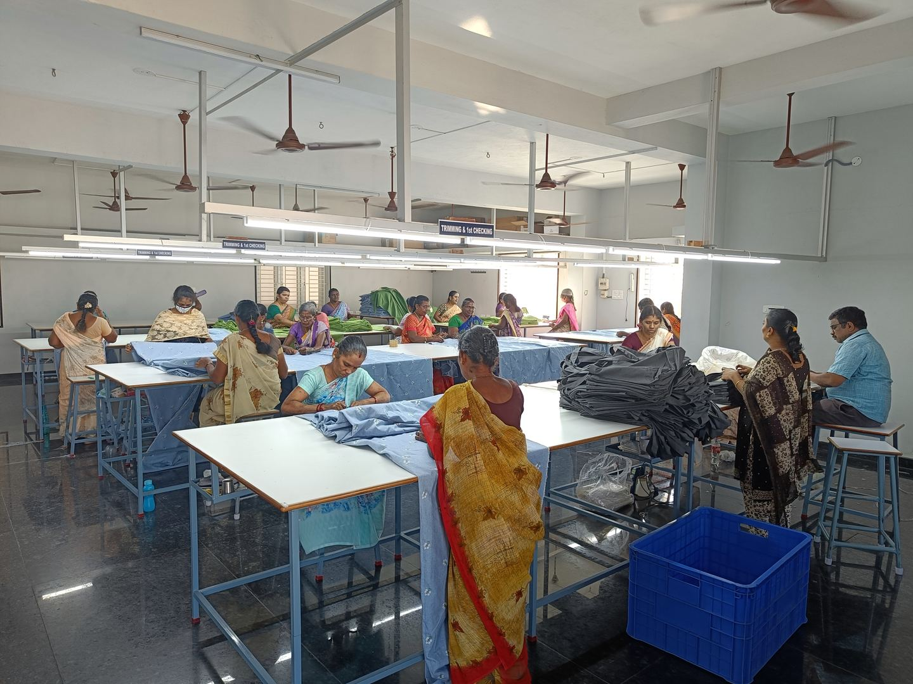
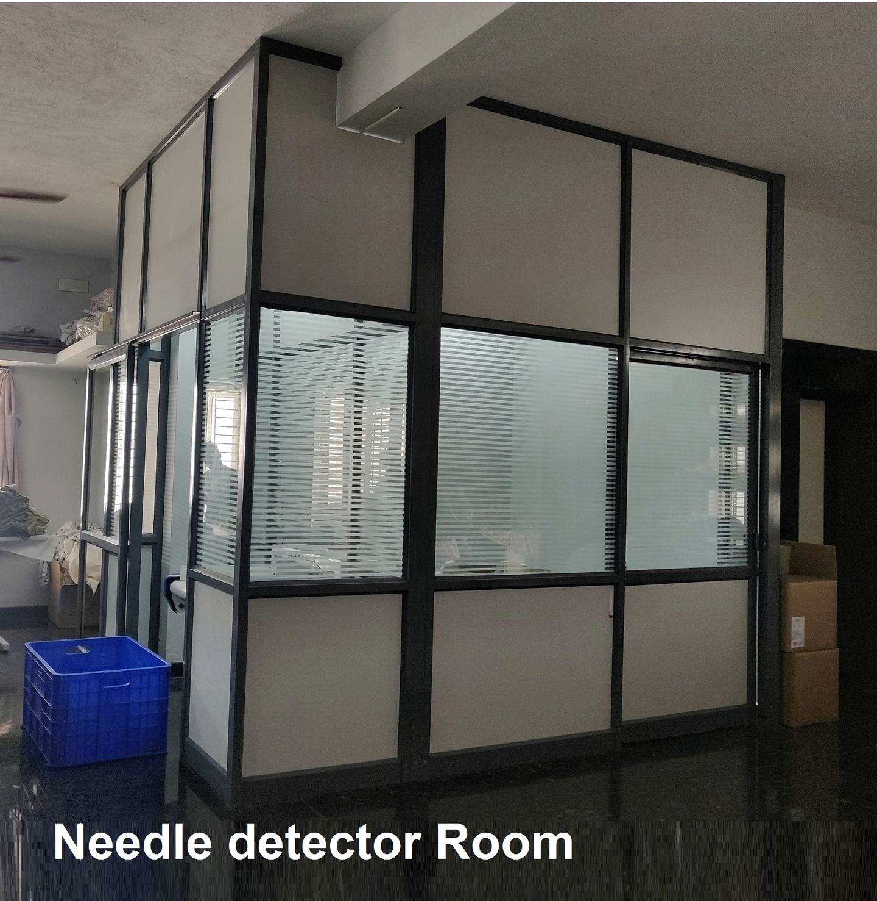

Checked, then checked again.
Japanese buyers are exacting about finish and safety. The systems we built to satisfy them are the same ones every other market gets.
Dedicated inspection staff
Checking stages before pass
Pieces through needle detection
Hashima detector model
Inspection
Every piece, more than once
Finished goods move through trimming and first checking, then a final check, before anything is folded. More than 50 staff work only on inspection, catching stitch faults, measurement drift, shade variation and print defects early.
- • Trimming & 1st checking stations
- • Final check against the approved sample
- • Measurement and shade verification
- • Barcode and label verification


Needle & metal detection
A dedicated room, and no exceptions
Every finished piece passes through a Hashima 790G metal and needle detector, in its own room, on its own line. Input and output are physically separated so checked and unchecked goods never mix. Anything that reads is pulled and re-worked.
Compliance
Documentation & certification
We support the paperwork international buyers need, and we are building formal third-party certification as we grow into new markets.
Available now
Commercial invoice, packing list, certificate of origin, test reports on request, needle-check declaration.
In progress
Third-party social and product certification (for example OEKO-TEX, SMETA-style audits). Timeline shared on request.
On your standard
We work to buyer manuals and AQL levels. Send your QA requirements with the enquiry.
Ask us for the current certification status and any specific test report you need.
Send us your QA manual
We will confirm what we already meet and what we would put in place for your programme.